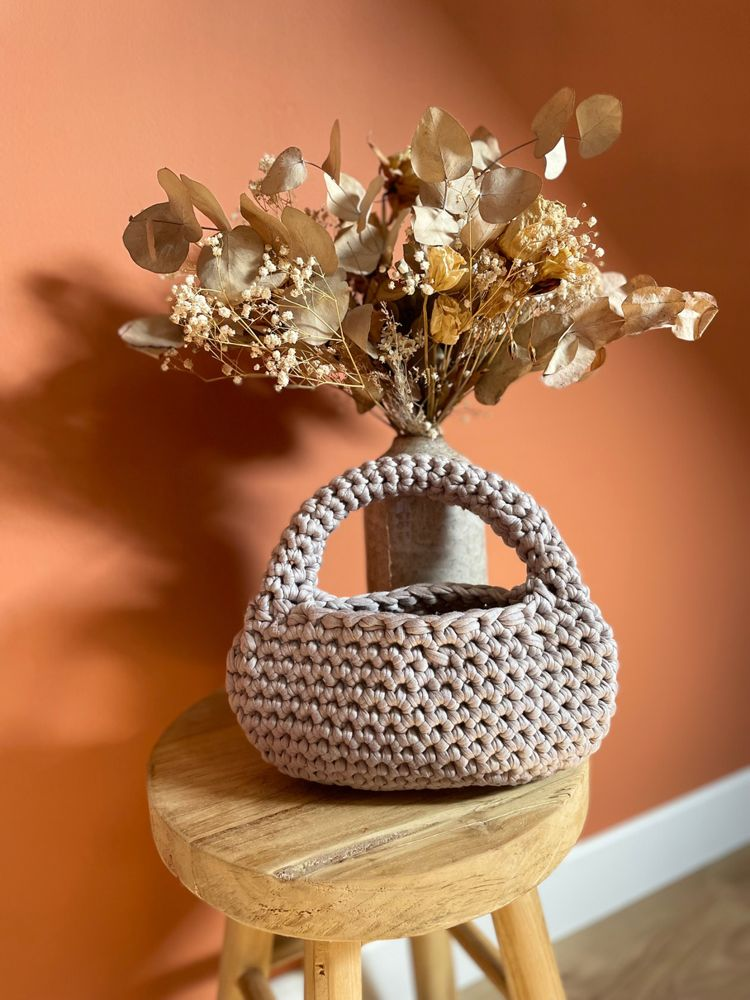
Ova Mini
dès 35 €Petit format, grand effet. Le sac idéal pour emporter l’essentiel avec style.
DécouvrirAccueil › Les modèles
Chaque modèle se décline dans les couleurs de votre choix. Les prix indiqués sont des prix de départ, selon le format et les options. Cliquez sur un modèle pour voir ses détails et le personnaliser.

Petit format, grand effet. Le sac idéal pour emporter l’essentiel avec style.
Découvrir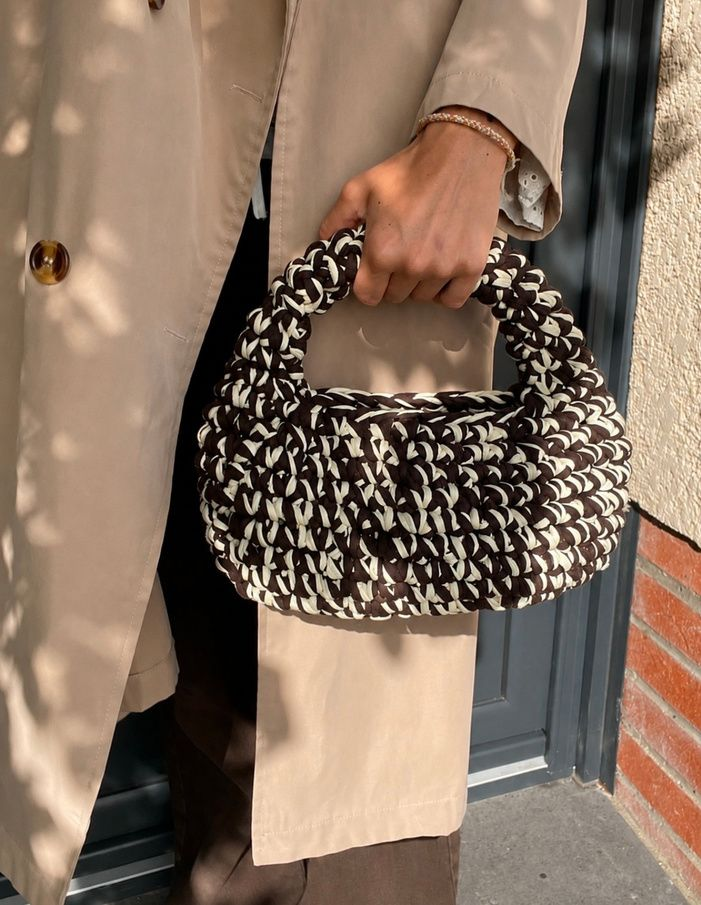
Plus spacieux, une pièce forte, pratique et personnalisable.
Découvrir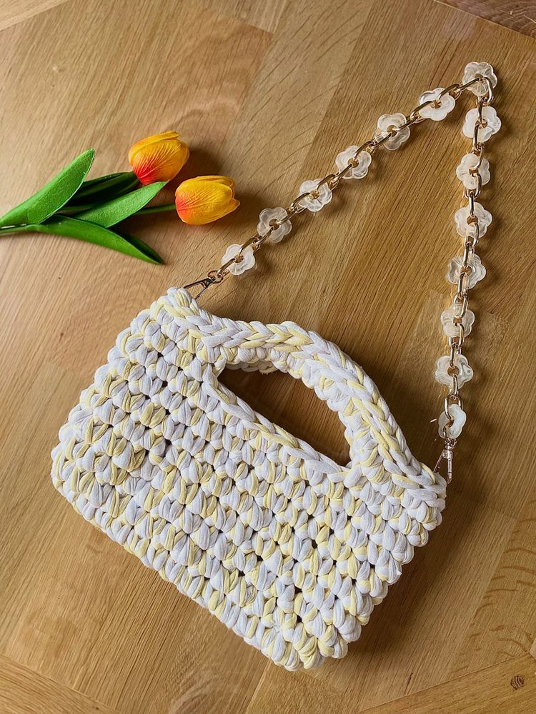
Un format structuré et original, avec ou sans anses selon vos envies.
Découvrir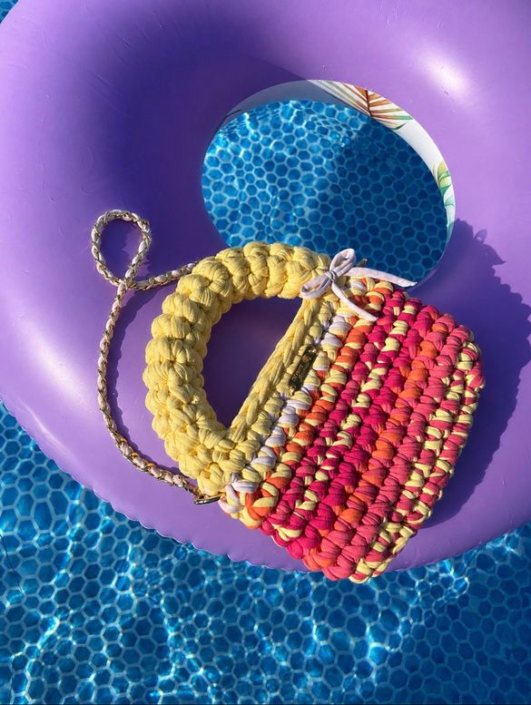
Une anse plus épaisse, un caractère encore plus affirmé.
Découvrir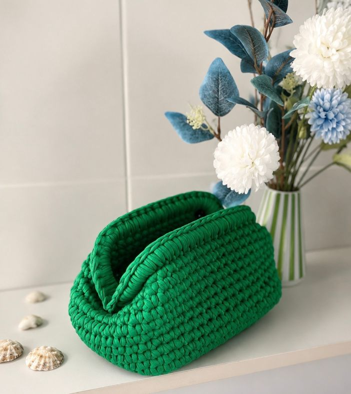

Une petite pochette aux lignes douces et arrondies, idéale pour emporter l’essentiel au quotidien.
Formats : Medium, Mini, Maxi Découvrir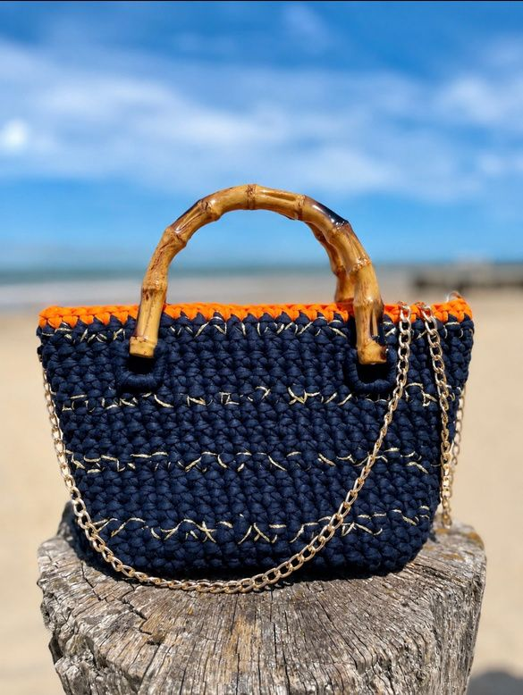
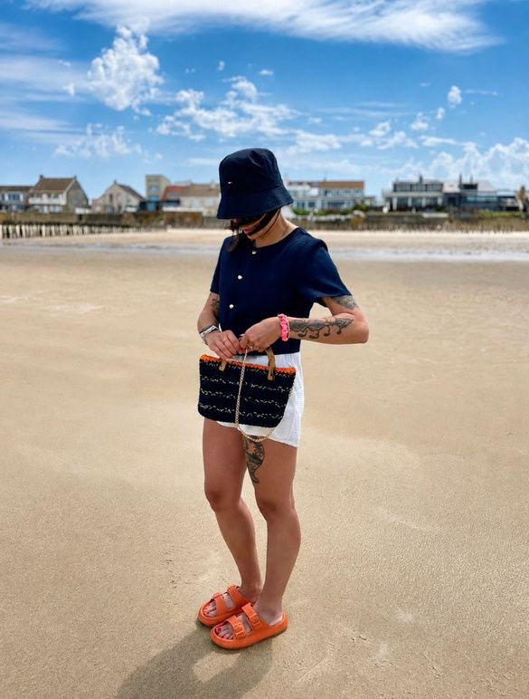
Un sac aux inspirations marines, avec anses effet bambou, chaîne dorée et fond rigide, pour vous accompagner tout l’été avec élégance.
Découvrir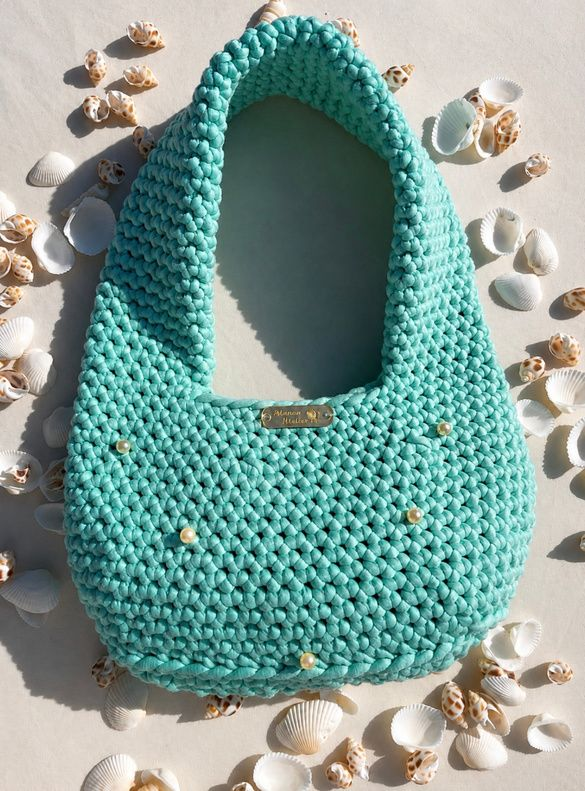

Un sac déstructuré dont les perles apportent une touche délicate.
Formats : Classique, Maxi Découvrir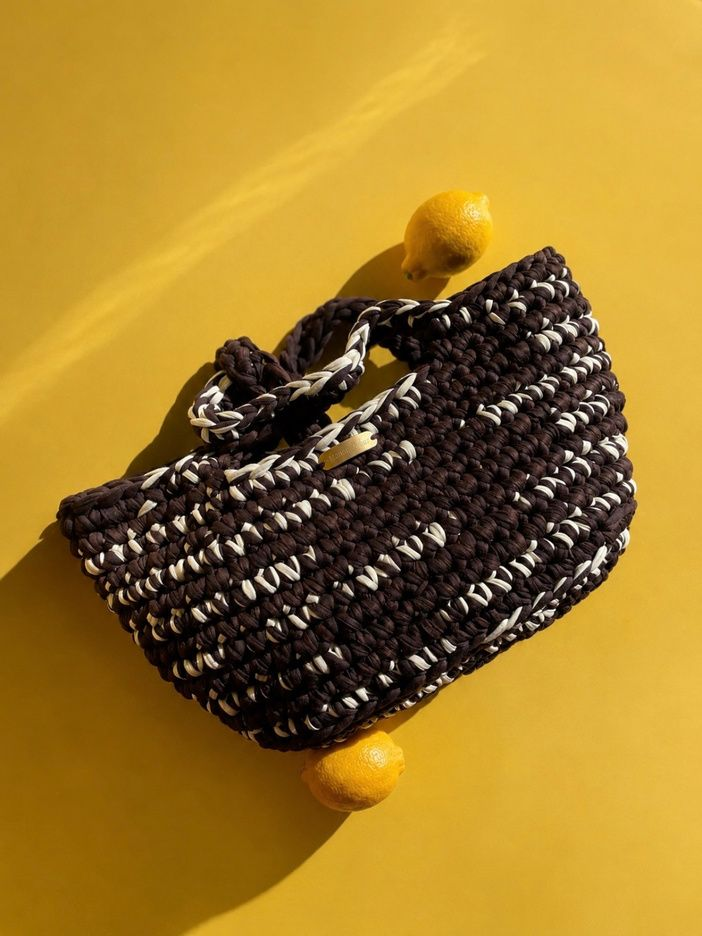
Un cabas généreux et structuré, pensé pour vous accompagner au quotidien.
Découvrir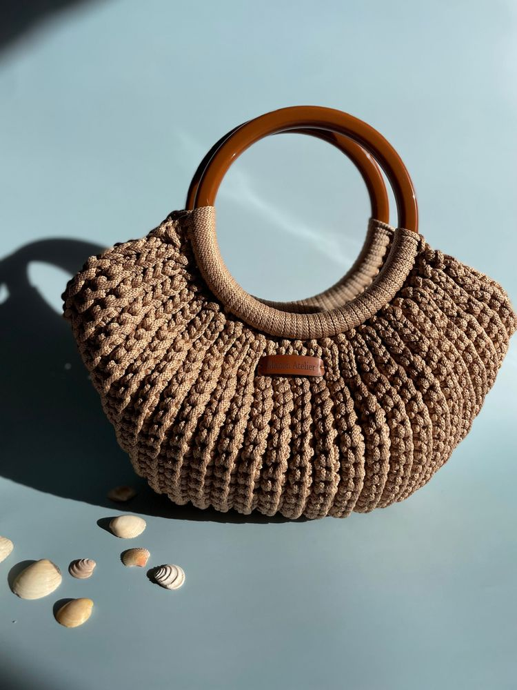

Un sac élégant, pensé pour sublimer vos tenues au quotidien.
Découvrir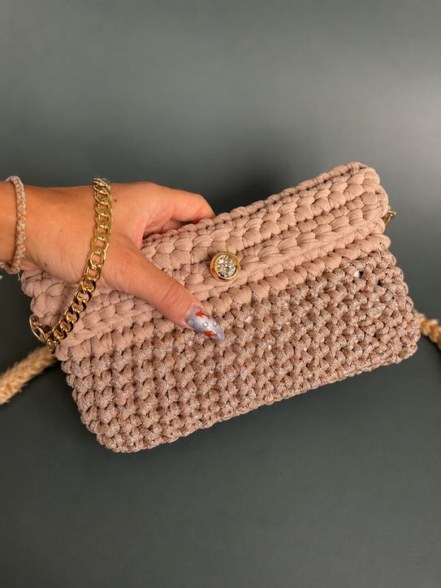

Une petite pochette, parfaite pour accompagner vos tenues du quotidien et sublimer vos looks de soirée.
Découvrir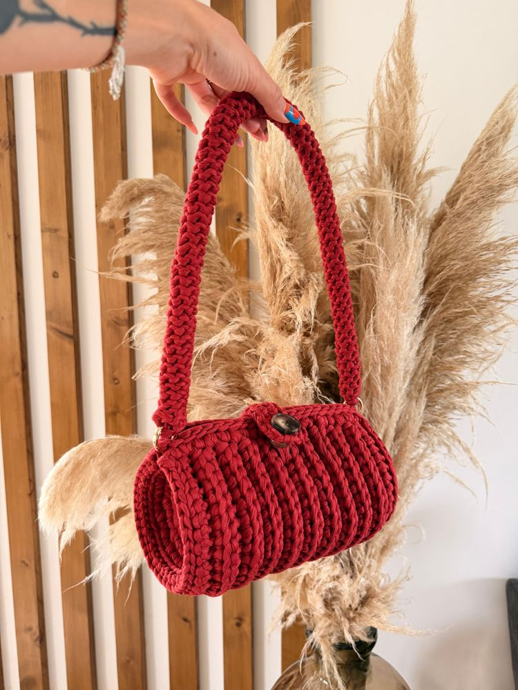
Un sac à main qui a du caractère.
Découvrir
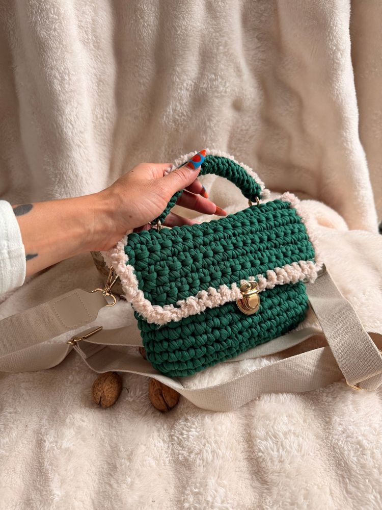
Un petit cartable plein de caractère pour cet hiver.
Bandoulière incluse Découvrir

Un mélange de matières qui casse les codes du sac chic, pour une allure élégante, moderne et pleine de caractère.
Découvrir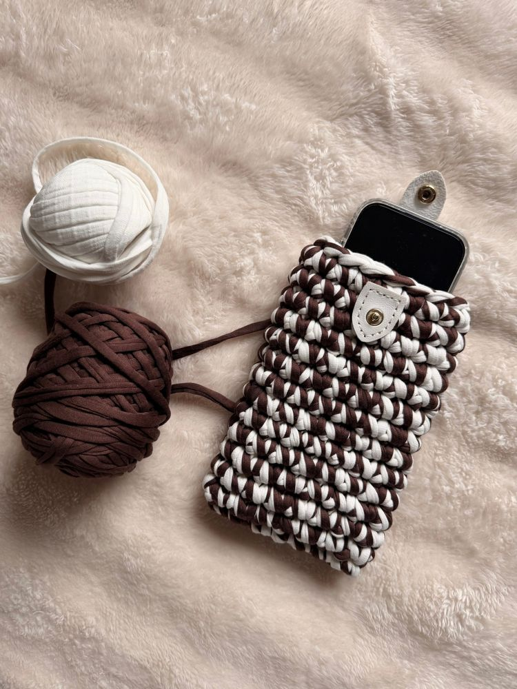
Une petite pochette pour ton téléphone, imaginée par toi et crochetée par mes soins.
Découvrir